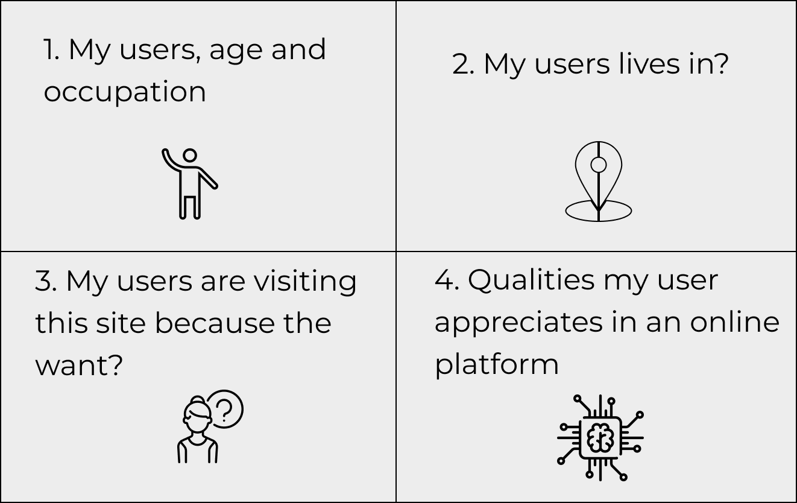
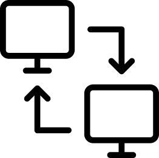
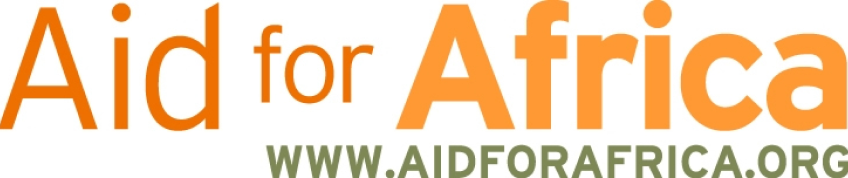
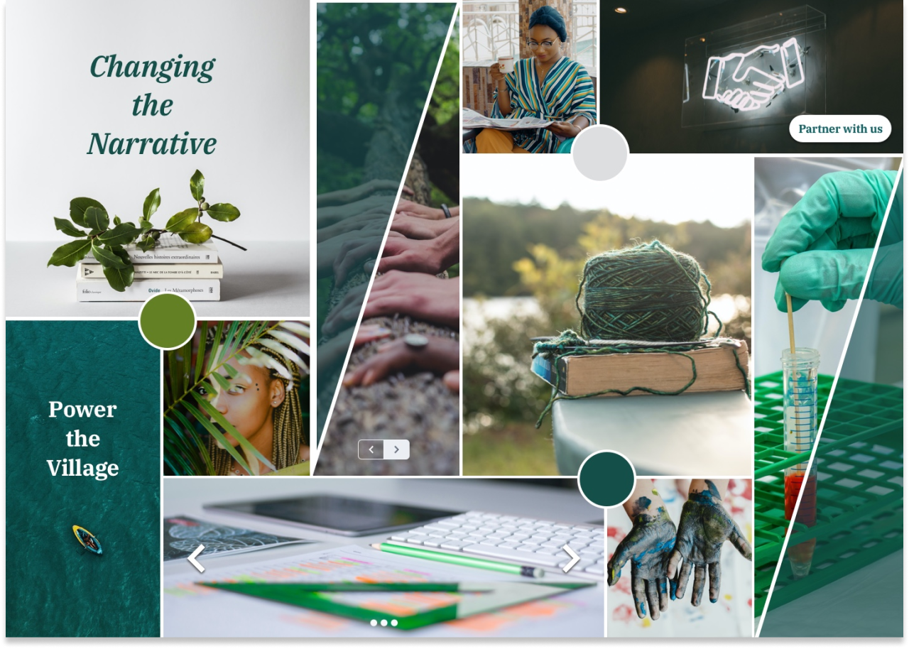
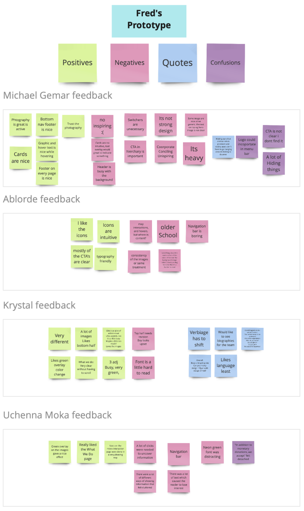
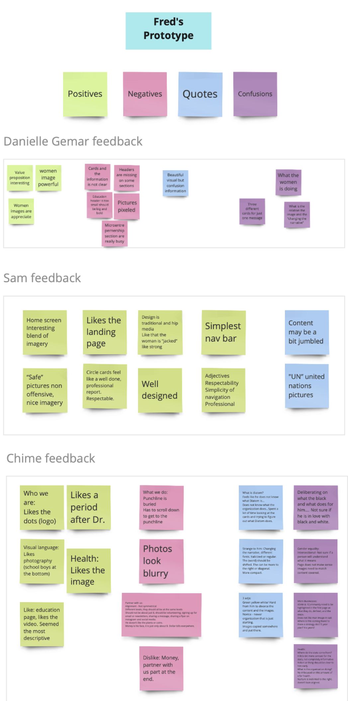
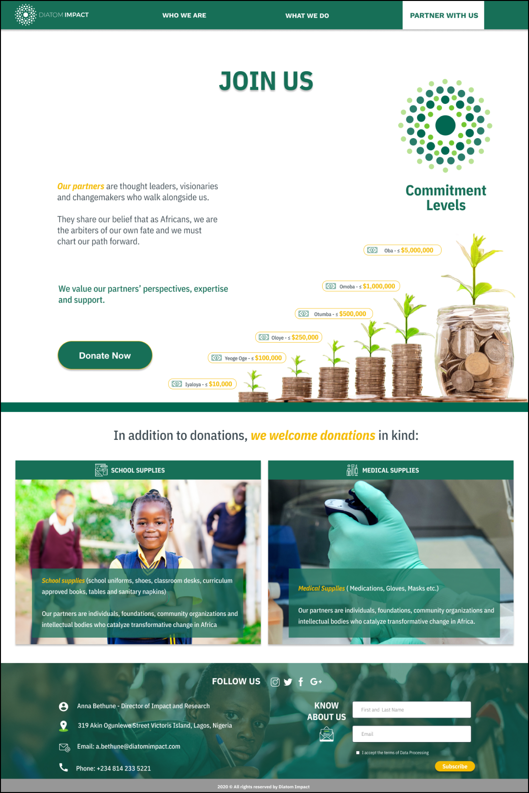

Diatom Impact is a new venture started by Platform Capital Investment Partners, a venture capital firm based in Lagos, Nigeria. It is a non-profit organization with the mission of working at an ecosystem level to improve the
everyday lives of Nigerian citizens.
The Challenge
This project will focus on the creation and application of a UI treatment for the front end of the website so that Diatom impact can partner and engage with multi-national and international organizations to fund social impact projects in
partnership with local leaders.
The Problem in Detail
Diatom Impact needs help in creating and applying a visual treatment that communicates professionalism, integrity, trust, and social responsibility because Nigeria has a stereotype of being full of scammers; this stereotype needs to be
overcome, They want to partner with Foundations/CSRs to be persuaded to invest in Africa (and Nigeria specifically).
Time frame
4 weeks
Team members
Michelle, Amika, Ryan, and Fred
Final deliverables
User research, moodboards, style tiles, mid to high fidelity screens and prototype.
Tools
Figma and Photoshop
Design process
Kick off meeting with client
Research
Moodboards
Style tiles
Analyzing wireframes
High fidelity and prototype Round 1
High fidelity and prototype Round 2
Final design
Kickoff meeting with the client and proto persona
Anna Bethune - Director of Impact and Research

The first meeting was crucial in our initial part of the process to understand our client’s needs.
A proto persona is a fictional character generated based on who you think your user is. and then to know about users: behaviors, needs, demographics, and information.
We wanted to make sure we design this site to attract the right users.
Design principles
As a team, We discuss different web design principles that will make the website aesthetically pleasing, easy to use, engaging, and effective.
Cultural awareness
Social Responsibility, Understanding the Nigerian culture and norms. Human rights and dignity.
Partnership & Community
Make your site donor-friendly.
Simplicity
Appealing & catering to persona and building a website around what they want.
Fit for purpose

Strong visual hierarchy, avoid excess noise that might confuse users.
Research
Competitive analysis
Our competitive analysis was focused on organizations who help African citizens and offer different services to the community, the competitive analysis made it was based on visual elements and architecture of their actual websites. (Click here to see the competitive analysis)

Moodboards
Using the proto persona results and the competitive analysis insights, we decided to go and design moodboards. We also decided to use the colors of the actual logo to give our client a variety of options to choose from and give her the
option
to choose different elements that she liked from each direction.
Moodboard 1
The first direction I decided to go was with a focus on human connection, and the mood conveyed through the moodboard was appropriate for the target audience because it represents education, opportunities inclusion, protection, gender
equality. The adjectives for the moodboard represent:
Adjectives:
Modern
Natural
Collaborative
Moodboard 2
This moodboard represents teamwork, collaboration, education, equality and inclusion. The adjectives used for this moodboard were:
Adjectives:
Professional
Impactful
Reflective

Moodboard 3
Represent women in tech, education, health, and freedom of expression.The adjectives used for this moodboard were:
Adjectives:
Inviting
Friendly
Optimistic
Final Direction (next step “Style tiles”)
Once the moodboards were presented and approved by the client I had the direction to continue on my style tiles.
Style tiles
Combining fonts, colors, and interface elements helped me to communicate the essence of a visual brand of Diatom Impact. These style Tiles helped me to form a common visual language between me and the client to provide a catalyst for
discussions around the preferences and goals of the client.
Style Tile 1
The look and feel of this Style Tile are appropriate for the target audience because it represents education, opportunities inclusion, protection, gender equality.
Emotions:
Hope
Kindness
Optimism
Adjectives:
Modern
Natural
Collaborative
Style Tile 2
This Style Tile represents freedom of expression, and equality and inclusion and I decided to add the logo as an element to deliver professionalism:
Emotions:
Enthusiasm
Enjoyment
Admiration
Adjectives:
Professional
Impactful
Reflective
Style Tile 3
Represent women in tech, education. I decided to include the value propositions to make the concept feel more personal.
Emotions:
Inspiration
Confidence
Happiness
Adjectives:
Inviting
Friendly
Optimistic
Final Direction
Once the style tile was presented and approved by the client I had the direction to continue on my style tiles the style tile with major approval was:
Interview Round 1 (styles tiles)
Interviews will give us insights into what users think about a site, an application, a product, or a process. They can point out what site content is memorable, what people feel is important on the site, and what ideas for improvement they
may have. For these interviews we wanted:
to inform personas, journey maps, feature ideas, workflow ideas
to enrich a contextual inquiry study by supplementing observation with descriptions of tools, processes, and how users perceive the Style Tiles
to collect verbal responses related to observed behaviors.
Interviews help you gain a deeper understanding of people’s behavior and their reason why they do what they do.
For this round, we interviewed a total of user provided By the client who are associated with:
Foundations
CSR departments with interest in international activities
International development agencies
Insights
Users find my style Tiles with clear Layout, the Style Tile B was well received and approachable they find the design easy to understand, they love the hero image, good contrast and bold, the use of UI elements ( Icons and CTA’S) could
be
displayed in a way that users can understand, the headers need to be used in Sans Serif, the body text was readable the Style tile C was found unclear and hard to understand, the information given wasn’t enough for participants, Different
styles in one page could be distracted, the hero image is nice, the information displayed was unclear, the contrast and balance between elements are good.
Analyzing wireframes
Our client provided us the wireframes used for the actual website, Based on this we had the start point to design our first round of design concepts.
Round 1
At this point, and based on the feedback gathered from the style tiles I determined to follow a single design direction and create hi-fidelity designs of the current product state adding visuals that speak a cohesive design language and add
significant value to the user experience.
High fidelity mockups
Using the brand colors I incorporate different elements to approach our users with photography, iconography, CTA’s and facts that eventually will inform juicers what Diatom Impact does.
Prototype
Interview Round 2 (High fidelity & Prototype)
Interviews will give us insights into what users think about a site, an application, a product, or a process. They can point out what site content is memorable, what people feel is important on the site, and what ideas for improvement
they
may have. For these interviews, we will get feedback from users about our first round of Hi Fidelity Designs.
INSIGHTS
With a total of 6 interviews I got positive feedback and opportunities to make interactions on my design.
Top positives:
Photography (treatment and use)
Icons (intuitive and clear)
CTA’s (clear to now where to go)
Top opportunities
Heavy
Many styles
Information hiding behind the microinteractions
Improve the hierarchy

HIGH FIDELITY & PROTOTYPE ROUND 2
Now that I’ve gained valuable user insight on my designs, I’ll want to make some research-backed design decisions in the form of iterations. The goal is to further develop and polish my existing designs in a way that establishes the visual
aesthetic of the Diatom Impact. Each design decision and iteration was supported by solid reasoning, best practices, testing insights and project goals.
High fidelity mockups
For this round of design the main iterations were focused on cleaning the design providing simplicity, Round 1 was overloaded with microinteraction that hid value information for users, that’s why the biggest improvements were based on
hierarchy, balance and information clearly.
Prototype
Final Interview Round 3 (High fidelity & Prototype)
Interviews will give us insights into what users think about a site, an application, a product, or a process. They can point out what site content is memorable, what people feel is important on the site, and what ideas for improvement they
may have. For these interviews, we will get feedback from users about our first round of Hi Fidelity Designs.
INSIGHTS
I got positive feedback and opportunities to make interactions with my design.
Top positives:
Photography: Treatment and use
Iconography informative
Clear Calls To Action
Blockers:
The content keeps being a block on the process because users don't feel convinced to enroll into Diatom Impact, they want to learn more about the organization.
Solution:
For the final design I decided to incorporate call the actions around the sections to give users the opportunity to learn more about Diatom Impact .

Final design
High fidelity mockups
The Final design was presented with CTA’s around, this was crucial for users because make them feel that they had the opportunity to learn more about DIATOM IMPACT some users based on Nigeria feel that the imagery and used was accurate
to
understand what the organization does and the way to get involved as a user or as a investor.

Final Prototype
As a result of the design process, we were able to delivered our final designs to our client who happily approved our designs
Conclusion
This project was very valuable to myself and I enjoyed working with a team of individuals to create a product for a Diatom Impact. Our client Anna was an absolute pleasure to work with and was very helpful every step of the way in providing
the team with what we required or anything additional that we needed.
It was a great learning experience and our team grew and actively learned together, and from each other. We were also able to effectively adapt to the situations or roadblocks that we experienced in a timely and collaborative manner. We
worked extremely well as a team and I am very thankful for my team members. I learned a lot from them and from Flatiron School in general through this project, especially the instructors.